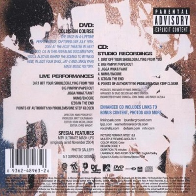
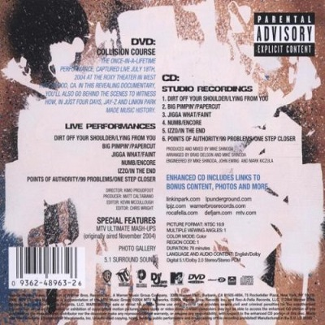

collision course
 

Lançamento: 30 de Novembro de 2004
Produzido por: Kimo Proudfoot
Mixado por: Matt Caltabiano
Gravadora: Warner Bros. Records/Roc-a-Fella Records/DefJam Records/Machine Shop Recordings
Collision Course é um álbum colaborativo do rapper americano Jay-Z e da banda de rock Linkin Park, lançado em 30 de novembro de 2004 pela Roc-A-Fella, Machine Shop, Warner Bros. e Def Jam Records. Do catálogo do Linkin Park, Collision Course traz três músicas do Meteora e quatro do Hybrid Theory. Do catálogo de Jay-Z, traz três músicas do The Black Album, uma do Vol. 3: Life and Times of S. Carter, um do vol. 2... Hard Knock Life e um do The Blueprint. Antes do álbum, Jay-Z lançou colaborações com The Roots e R. Kelly, e Linkin Park colaborou com vários artistas em seu álbum de remixes Reanimation.
O álbum foi inspirado em The Gray Album de Danger Mouse, que foi um álbum mash-up entre Jay-Z e os Beatles. A MTV planejou originalmente misturar apenas uma ou duas canções, mas o projeto acabou sendo expandido para um álbum de seis canções. A produção do álbum foi feita principalmente por Mike Shinoda e Jay-Z, e foi gravado entre 16 e 19 de julho. O álbum gerou um single, "Numb/Encore", que ganhou o prêmio de Melhor Colaboração Rap/Sung no 48º Grammy Awards. . O álbum recebeu críticas geralmente mistas dos críticos musicais, mas apesar disso foi um sucesso comercial. Ele estreou como número um na parada US Billboard 200, vendendo 368.000 cópias em sua primeira semana.
Mike Shinoda revelou em seu discurso de aceitação do Grammy de 2004 que ele se juntaria a Jay-Z para um disco no programa Mash Ups da MTV.
A rede permitiu que Jay-Z escolhesse um grupo ou artista para o mash-up. Jay contatou Shinoda, que começou a experimentar mixar as faixas antes de enviar alguns exemplos para ele. Como resultado, Jay-Z começou a trabalhar com Shinoda por e-mail. Os dois decidiram que, em vez de combinar as faixas existentes para a apresentação ao vivo na MTV, eles queriam retrabalhar e regravar partes das músicas para ajustá-las melhor. Shinoda explica: "Jay e eu percebemos que é melhor refazer os vocais de rap se você for fazer isso com uma nova batida porque a vibração muda e você tem que entregar seu verso um pouco diferente." Shinoda perguntou a ele. companheiros de banda para regravar faixas instrumentais e vocais também e, finalmente, ambas as partes decidiram que queriam lançar as faixas de estúdio. O álbum inteiro foi montado em quatro dias.
Collision Course foi o primeiro álbum do Linkin Park que continha um adesivo Parental Advisory, já que a maioria dos versos de Jay-Z contém palavrões (embora Shinoda e Chester Bennington também sejam ouvidos usando linguagem vulgar no álbum). Este álbum também foi feito em versão editada/censurada. No entanto, a versão limpa do álbum deixou as palavras "bitch", "ass" e "hoes" sem censura, o que significa que "Izzo/In the End" é o mesmo nas versões limpa e explícita.
Um ano após o lançamento de Collision Course, Jay-Z foi o produtor executivo do trabalho solo de Mike Shinoda, Fort Minor's The Rising Tied. Além disso, a música "High Road" do mesmo disco fala sobre como alguns críticos receberam Collision Course negativamente.
músicas
- Dirt Off Your Shoulder / Lying From You
- Big Pimpin’ / Papercut
- Jigga What / Faint
- Numb / Encore
- IZZO / In The End
- Points Of Authority / 99 Problems / One Step Closer